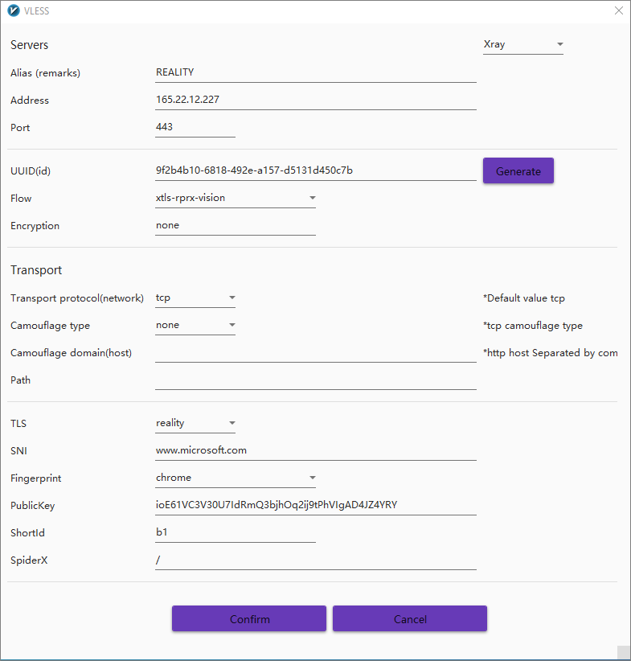

Xray REALITY tutorial
Xray-core v1.8.0 adds support for REALITY.
REALITY implements full TLS using the SNI of a camouflage website. This eliminates the TLS fingerprint of the server, while preserving perfect forward secrecy and preventing certificate chain attacks. It is not only more conventient, it also provides greater security than conventional TLS.
This article shows you how to install Xray-core on a server and client with REALITY security.
With thanks to @rprx, @chika0801, @2dust, and all other contributors to this post. Any errors that remain are my own.
Buy VPS
International lines out of China are congested. Therefore it is important to pay attention to the routing of traffic to your VPS. The most expensive option is IPLC/IEPL. Assuming you can’t or won’t go that far, the next most expensive is a VPS with CN2 GIA routing in Hong Kong. That service is offered by BandwagonHost. Again, it is still very expensive. A CN2 GIA server in Los Angeles is more affordable. To find all the CN2 GIA options on the BandwagonHost website, click CN2 GIA, read the description of the different possibilities, then scroll down and click All Services. Search the services page (Ctrl+f) for CN2 GIA.
Some other options for China are Vultr and Aliyun (Alibaba Cloud).
For Iran, the difficulty is in making payment. Try AlphaVPS, RackNerd, Noez, or Aeza.
Since IP addresses frequently get blocked, ask potential providers if you can change your server’s IP address whenever necessary.
For the VPS hardware, 1 GB of RAM is sufficient for a small number of users. Choose a recent version of Debian or Ubuntu as your operating system.
You do not need a domain name or DNS records for Xray REALITY.
Get terminal app
You can use the terminal application in macOS or Linux to SSH into your server. Modern versions of Windows PowerShell also support SSH.
You may prefer to use a purpose-built SSH app such as PuTTY, XSHELL, or FinalShell.
Prepare server
SSH into your server using Windows PowerShell or the terminal app in Linux or macOS. Replace <SERVER-IP-ADDRESS> by your actual server IP address in the command below:
1 | ssh root@<SERVER-IP-ADDRESS> |
Suppress lengthy login messages:
1 | touch .hushlogin |
Get the existing package metadata up to date, and upgrade all existing packages:
1 | apt update && apt upgrade |
You may be prompted to reboot and then SSH back in again.
Protect your server with iptables, replacing <HOME-IP-ADDRESS> by your actual home IP address:
1 | iptables -A INPUT -i lo -j ACCEPT |
Check that you can still access the server with these rules before you make them permanent:
1 | exit |
Make the iptables rules permanent:
1 | apt install iptables-persistent |
Enable BBR congestion control algorithm
Copy and paste these three commands into your SSH session to enable the Bottleneck Bandwidth and Round-trip propagation time (BBR) congestion control algorithm:
1 | echo "net.core.default_qdisc=fq" >> /etc/sysctl.conf |
Install Xray on server
Install Xray version 1.8.0 or later to run as root:
1 | bash -c "$(curl -L https://github.com/XTLS/Xray-install/raw/main/install-release.sh)" @ install --beta -u root |
Generate parameters
On the Linux server, generate a universally unique id with ./xray uuid. Example of output:
1 | 9f2b4b10-6818-492e-a157-d5131d450c7b |
Plug the id into both the server and the client configuration files.
Generate a public-private key pair with ./xray x25519. Example of output:
1 | Private key: M4cZLR81ErNfxnG1fAnNUIATs_UXqe6HR78wINhH7RA |
Plug the private key into the server configuration file, and the public key into the client configuration file.
Choose a shortId of up to 16 hexadecimal characters. Example:
1 | b1 |
Plug this into the server and client configuration files.
Determine camouflage website
The minimum standard of the camouflage website is that it be a foreign website, support TLSv1.3 and H2, and have a URL that is not redirected elsewhere (though the apex domain name may be redirected to www).
Bonus points if it has a similar IP to your server, the handshake messages after the “Server Hello” are encrypted together (such as for dl.google.com), and the server implements Online Certificate Status Protocol (OCSP) stapling.
Plug your camouflage website into both the server and the client configuration files.
Our example: www.microsoft.com.
Xray configuration on the server
If you specify security of reality, these are the possible properties of realitySettings:
| Property | Specification |
|---|---|
show |
Optional. If true, output debugging information. |
dest |
Required. The format is the same as the dest of VLESS fallbacks. |
xver |
Optional. The format is the same as xver of VLESS fallbacks. |
serverNames |
Required. The serverName list available to the client. Does not support * wildcards. |
privateKey |
Required. Execute ./xray x25519 to generate |
minClientVer |
Optional. The minimum version of client Xray. The format is x.y.z. |
maxClientVer |
Optional. The highest version of client Xray. The format is x.y.z. |
maxTimeDiff |
Optional. The maximum time difference allowed in milliseconds. |
shortIds |
Required. The shortId list available to the client, which can be used to distinguish different clients. If set to an empty string, the client shortId can be empty. If non-empty, should be a multiple of 2 hexadecimal digits, with a maximum of 16 hexadecimal digits. |
In the template for /usr/local/etc/xray/config.json below, Xray listens on 0.0.0.0:443.
1 | { |
Run Xray on the server
After saving your server configuration file in /usr/local/etc/xray/config.json, restart the Xray service with the command:
1 | systemctl restart xray |
Xray-core command-line client for Windows
Download the latest release from https://github.com/XTLS/Xray-core/releases, e.g. Xray-windows-64.zip version 1.8.0.
Unzip the .zip file.
Create a client configuration file config.json. If you specify security of reality, these are the possible properties of realitySettings:
| Property | Specification |
|---|---|
show |
Optional. If true, output debugging information. |
fingerprint |
Required. Use uTLS library to emulate client TLS fingerprint. |
serverName |
One of the server names. |
publicKey |
The public key corresponding to the private key of the server. |
shortId |
One of the server shortIds. |
spiderX |
The initial path and parameters of the crawler are recommended to be different for each client. |
Here is a template for Downloads\Xray-windows-64\config.json into which you can substitute your own values:
1 | { |
If you use Windows Notepad as your editor, remember to save Downloads\Xray-windows-64\config.json without the usual .txt on the end of its name.
Open Windows PowerShell and run the client:
1 | cd Downloads\Xray-windows-64 |
Configure your browser to use the SOCKS proxy on 127.0.0.1 port 10808.
v2rayN GUI client for Windows
v2rayN version 6.17 adds support for REALITY and removes legacy XTLS settings.
The screenshot below shows the v2rayN panel with language set to English. If you have never changed the v2rayN language before, watch the video demonstration How to change v2rayN to English.

v2rayNG client for Android
v2rayNG version 1.8.0 adds support for REALITY and removes legacy XTLS settings.
Learn more
Consult the README in the Xray-core repository.